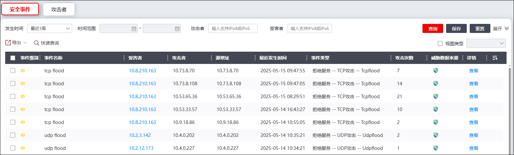
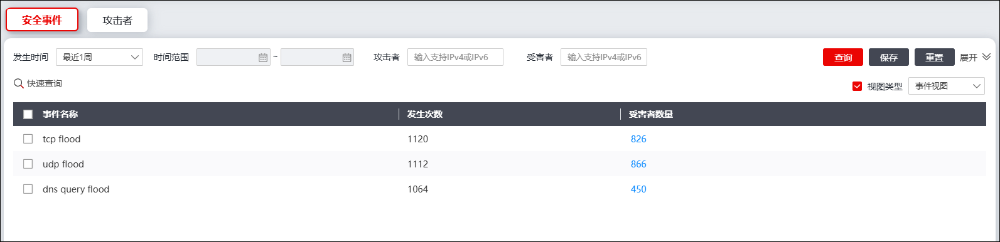
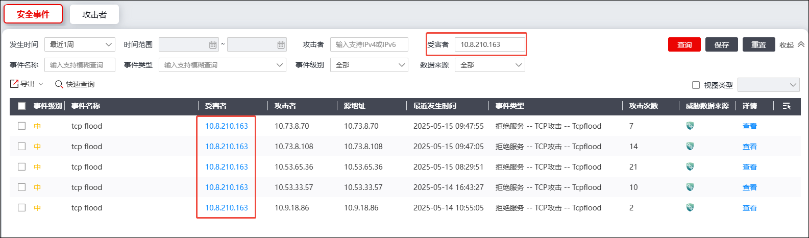
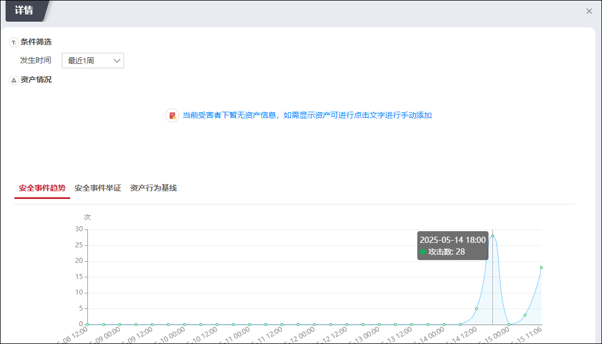
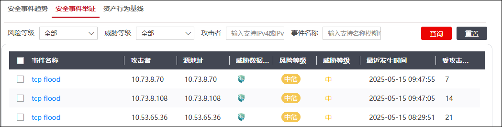
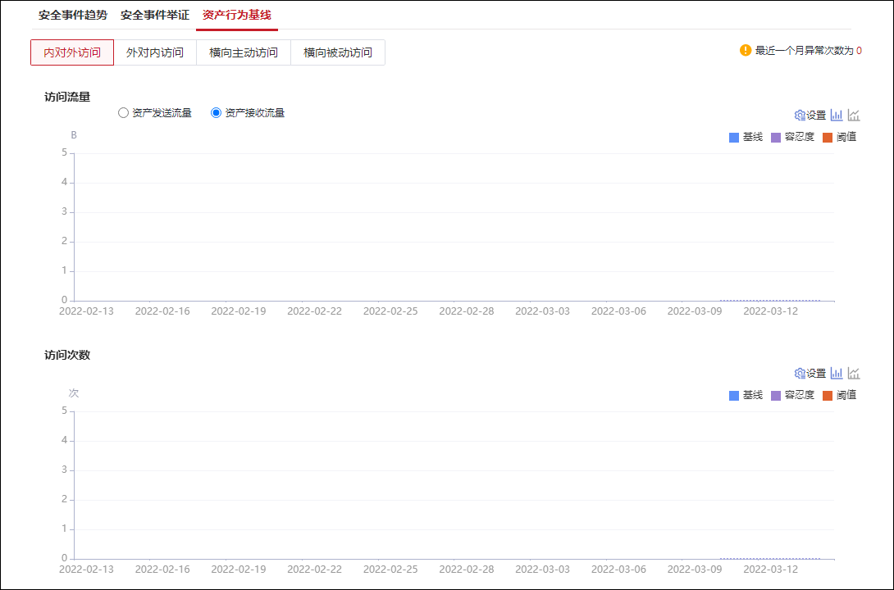
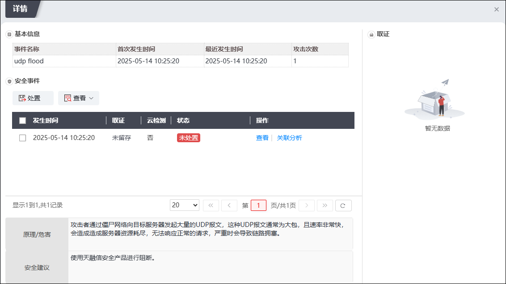
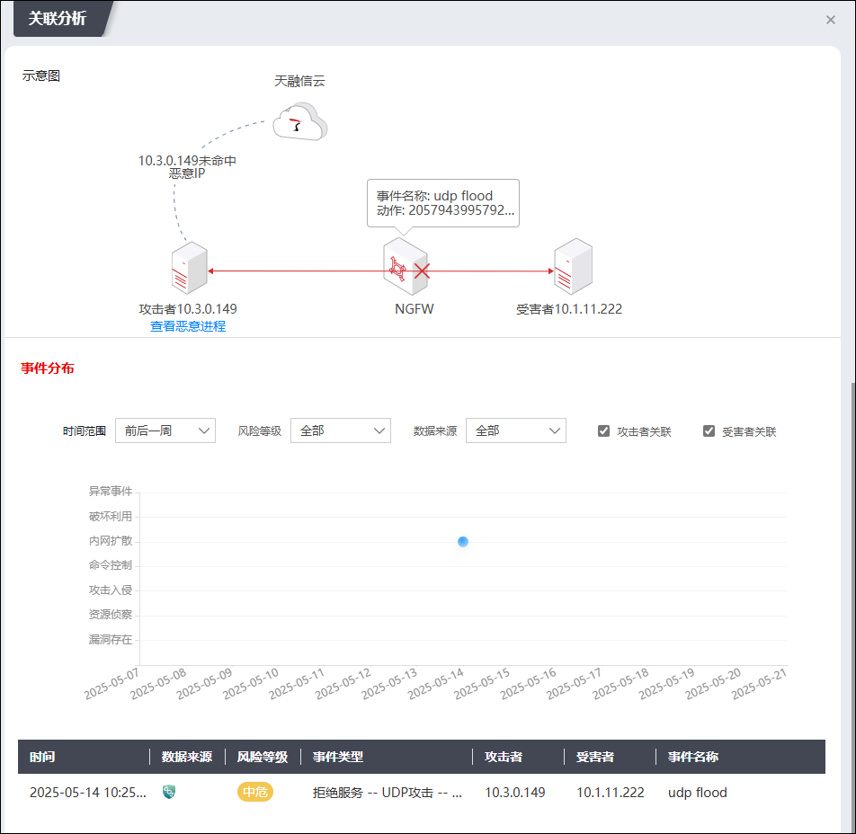

此模块以安全事件视角展示相关威胁详情，管理员可查看受害者详情、处置威胁。
安全事件模块的相关操作如下。
| 步骤1 | 选择 ，激活“安全事件”页面，如下图所示。 |

界面默认以列表形式展示安全事件，详细信息包括事件名称、受害者、攻击者等。同时，系统支持查看不同视角下的安全事件统计信息：勾选界面右上角的“视图类型”，下拉窗口可选项包括：时间视图、事件视图、攻击者视图和受害者视图。以选择“事件视图”为例，界面如下图所示。

此视图下以事件发生次数倒序展示相关统计信息。
| 步骤2 | 条件筛选 |
1）界面默认展示最近1周的安全事件信息，点击“发生时间”下拉框可切换展示周期，可选项为：最近1小时/最近1天/最近1周/最近1月/自定义。
2）模块支持通过攻击者、受害者的IPv4/IPv6地址进行检索，同时支持通过事件名称进行模糊查询。
3）点击【展开】按钮，可展开开始/结束时间、事件级别等过滤条件。管理员可根据实际需求设置一个或多个过滤条件，再点击【查询】按钮，下方列表将展示符合条件的安全事件，如下图所示。

| 步骤3 | 查看受害者详情 |
1）点击“受害者”列数据，弹出“详情”页面，如下图所示。

该页面展示了受害者相关资产信息，包括资产基础信息、关键风险、安全防护等，并以列表形式展示资产详细信息，包括mac、操作系统、名称、类型、位置、安全评分等，还以折线图形式展示了攻击趋势。
2）激活“安全事件举证”页签，如下图所示。

该界面展示了该受害者关联的事件信息，包括事件名称、攻击者、风险等级、受攻击次数等。支持通过事件名称进行模糊查询，同时，可组合风险等级、威胁等级和攻击者IPv4/IPv6地址等信息进行查询。
3）激活“资产行为基线”页签，如下图所示。

该界面展示了该受害者近一个月内的资产行为基线，点击图表右侧的“设置”，可以设置基线粒度、容忍度和异常阈值。
参数 |
说明 |
|---|---|
异常细粒度 |
对于资产的某个维度生成小时基线或天基线，默认为天。 |
容忍度 |
允许访问数据波动的上限范围，会把预测基线上浮对应百分比作为判定异常的标准；若值高于容忍度基线值则判定为异常，其余情况不判定异常。 |
阈值 |
配置波动阈值。阈值开关为开时，增加“自定义访问流量异常阈值”项。 说明： 当用户配置了阈值时，NGFW会按照用户配置的阈值作为异常判定标准，只作用于基线上限；最高可配置为9.99万亿，超过该数值后均按照9.99万亿处理。 判定异常的优先级：阈值>容忍度。 |
四个资产场景的详细信息如下。
资产场景名称 |
说明 |
|---|---|
内对外访问 |
该资产访问公网地址的场景。 |
外对内访问 |
公网地址访问此资产的场景。 |
横向主动访问 |
此资产访问其他内网地址的场景。 |
横向被动访问 |
其他内网地址访问此资产的场景。 |
| 步骤4 | 查看安全事件详情 |
1）点击某安全事件对应“详情”列“查看”，弹出“详情”页面，如下图所示。

管理员可以在此页面查看安全事件详情并进行处置，处置动作包括：忽略、误报、加入白名单、加入黑名单、修改访问控制、修改防护对象和修改策略模板。
处置旁边的“查看”选择“未处置”或“全部”安全事件。
点击指定安全事件发生时间操作列的“查看”，可以查看该安全事件对应的日志信息；点击“关联分析”，可以查看NGFW对于该安全事件的关联分析，界面如下图所示。

点击“行为基线”可以查看受害者主机近30天内的行为基线。
| 步骤5 | 导出安全事件 |
导出指定数据：勾选所需导出数据，点击“导出”并选择“导出选择项”即可。
导出当前页数据：点击“导出”并选择“导出当前页”即可。
导出全部数据：点击“导出”并选择“导出全部”即可。